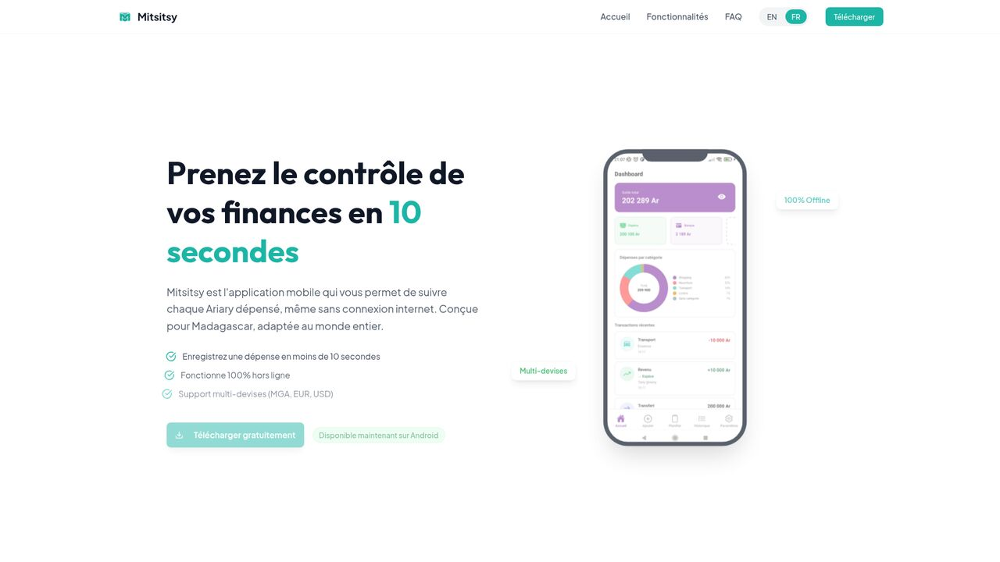
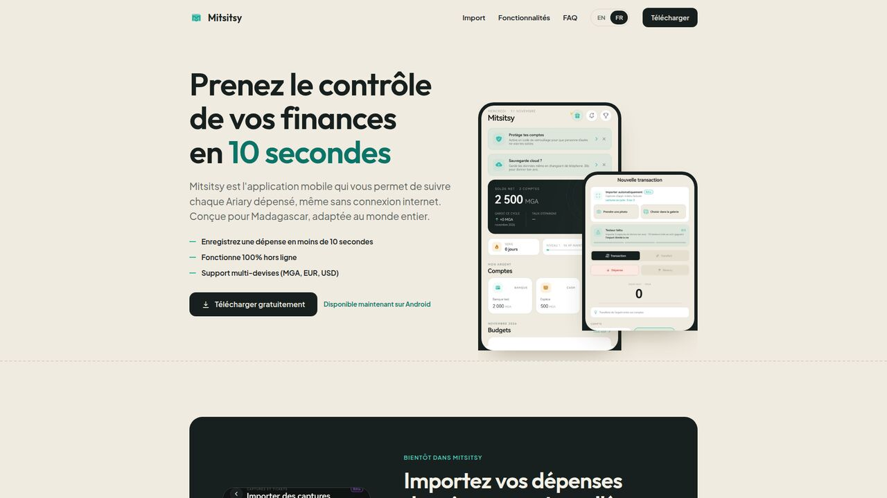
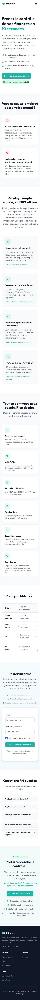
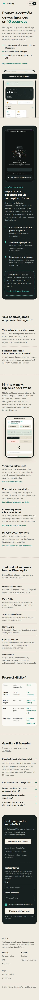
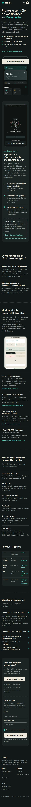
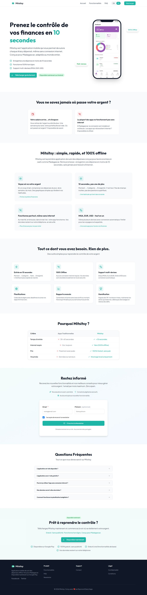
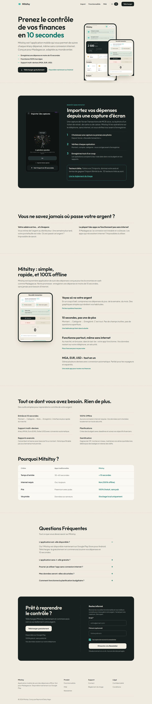
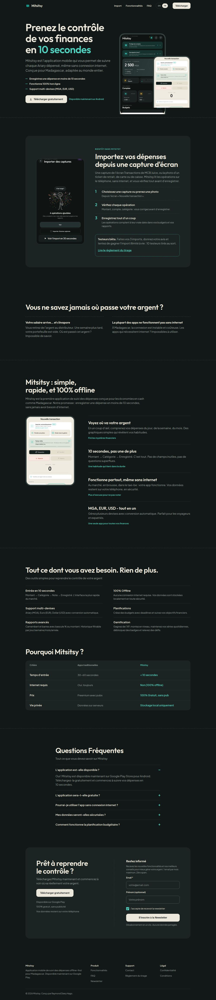

<title>Refonte landing Mitsitsy</title>
<meta name="claude:viewport-fit-sides" content="cover">
<link rel="stylesheet" href="https://fonts.googleapis.com/css2?family=Outfit:wght@600&family=Plus+Jakarta+Sans:wght@400;600&display=swap">
<style>
/* Mise en page : une colonne de lecture, les captures en paires avant / après dans des cadres défilants */
:root{--papier:#F0EBE0;--feuille:#FBF9F4;--encre:#17201F;--doux:#5C6460;--accent:#0B7468;--trait:#DAD3C4;
--titre:"Outfit",system-ui,sans-serif;--texte:"Plus Jakarta Sans",system-ui,sans-serif}
@media (prefers-color-scheme:dark){:root:not([data-theme="light"]){--papier:#121817;--feuille:#1C2423;--encre:#EDE8DC;--doux:#9BA6A1;--accent:#4FD1BF;--trait:#2C3634;color-scheme:dark}}
:root[data-theme="dark"]{--papier:#121817;--feuille:#1C2423;--encre:#EDE8DC;--doux:#9BA6A1;--accent:#4FD1BF;--trait:#2C3634;color-scheme:dark}
body{background:var(--papier);color:var(--encre);font:400 16px/1.6 var(--texte)}
main{max-width:1080px;margin:0 auto;padding-block:40px 72px;padding-left:max(16px,env(safe-area-inset-left,0px));padding-right:max(16px,env(safe-area-inset-right,0px));display:flex;flex-direction:column;gap:56px}
h1,h2{font-family:var(--titre);font-weight:600;line-height:1.15;text-wrap:balance;margin:0}
h1{font-size:clamp(30px,6vw,46px)}h2{font-size:clamp(22px,4vw,28px)}
p{margin:0;max-width:65ch}.doux{color:var(--doux)}
.sur{font-size:12px;letter-spacing:.08em;text-transform:uppercase;color:var(--accent);font-weight:600}
section,header{display:flex;flex-direction:column;gap:16px}
.etat{border:2px dashed var(--trait);border-radius:14px;padding:16px 18px;max-width:65ch}
.paire{display:grid;gap:16px;grid-template-columns:repeat(auto-fit,minmax(250px,1fr))}
figure{margin:0;display:flex;flex-direction:column;gap:8px;min-width:0}
figcaption{font-size:13px;font-weight:600;color:var(--doux)}
figcaption b{color:var(--accent)}
.cadre{background:var(--feuille);border:1px solid var(--trait);border-radius:12px;overflow:auto;max-height:620px}
.cadre img{display:block;width:100%}
.mobile .cadre img{max-width:360px;margin:0 auto}
ul{margin:0;padding-left:20px;display:flex;flex-direction:column;gap:10px;max-width:65ch}
li b{font-weight:600}
</style>
<main>
<header>
  <span class="sur">Maquette à valider · 11 novembre 2026</span>
  <h1>Refonte de la page d'accueil mitsitsy.app</h1>
  <p>La page actuelle date d'avant le nouveau visage de l'app. La maquette reprend vos textes (seule la première vue est raccourcie) et les habille comme l'app : papier beige, encre, turquoise, vraies captures.</p>
  <p class="etat"><b>Rien n'est poussé ni en ligne.</b> C'est une maquette statique hors dépôt. Après votre accord, Varek l'implémente sur la branche de la landing, toujours sans déploiement.</p>
</header>

<section>
  <h2>Première vue sur ordinateur</h2>
  <div class="paire">
    <figure><figcaption>Avant (en ligne)</figcaption><div class="cadre"></div></figure>
    <figure><figcaption><b>Après</b></figcaption><div class="cadre"></div></figure>
  </div>
</section>

<section class="mobile">
  <h2>Page entière sur téléphone (360 px)</h2>
  <p class="doux">Faites défiler dans chaque cadre.</p>
  <div class="paire">
    <figure><figcaption>Avant (en ligne)</figcaption><div class="cadre"></div></figure>
    <figure><figcaption><b>Après</b>, clair</figcaption><div class="cadre"></div></figure>
    <figure><figcaption><b>Après</b>, sombre</figcaption><div class="cadre"></div></figure>
  </div>
</section>

<section>
  <h2>Page entière sur ordinateur (1440 px)</h2>
  <div class="paire">
    <figure><figcaption>Avant (en ligne)</figcaption><div class="cadre"></div></figure>
    <figure><figcaption><b>Après</b>, clair</figcaption><div class="cadre"></div></figure>
    <figure><figcaption><b>Après</b>, sombre</figcaption><div class="cadre"></div></figure>
  </div>
</section>

<section>
  <h2>Ce qui change</h2>
  <ul>
    <li><b>Même identité que l'app.</b> Fond papier, boutons noirs, turquoise en petite touche, mêmes polices qu'aujourd'hui. Le trait pointillé façon ticket sert de fil entre les sections.</li>
    <li><b>Vraies captures récentes</b> à la place de l'ancien tableau de bord violet, dans le cadre de téléphone de l'ancien site, repris à l'identique (mêmes proportions, coque, encoche, écran entier). Deux téléphones sur ordinateur (accueil et nouvelle transaction), un seul sur mobile.</li>
    <li><b>Texte de la première vue raccourci</b> à votre demande. Avant : « Mitsitsy est l'application mobile qui vous permet de suivre chaque Ariary dépensé, même sans connexion internet. Conçue pour Madagascar, adaptée au monde entier. » Après : « Suivez chaque Ariary dépensé, même sans internet. Conçue pour Madagascar. » Les 3 puces passent à 2 : « Fonctionne 100% hors ligne » et « Multi-devises : MGA, EUR, USD » (celle des 10 secondes répétait le titre).</li>
    <li><b>Pied de page</b> : « Raymond Dzery Hago » renvoie vers dzeryhago.com.</li>
    <li><b>Nouvelle section « Bientôt dans Mitsitsy »</b> juste après la première vue : la vidéo verticale de l'import, les 3 étapes, l'encadré testeurs bêta (« tentez de gagner ») et le lien vers le règlement du tirage. Aucune date.</li>
    <li><b>Moins de cartes.</b> Les fonctionnalités deviennent une liste, la newsletter et l'appel final sont réunis dans un seul bloc.</li>
    <li><b>Bouton « Télécharger gratuitement » fixé en bas</b> sur téléphone, sous le pouce.</li>
    <li><b>Thème sombre</b> construit, contrastes vérifiés (AA) en clair et en sombre.</li>
  </ul>
</section>

<section>
  <h2>À trancher par vous</h2>
  <ul>
    <li><b>Captures de l'app.</b> Celles de la maquette viennent du téléphone de test (solde 2 500 MGA, bannières « Protège tes comptes »). Je propose de les refaire avec un jeu de données neutre et plus rempli avant la mise en ligne.</li>
    <li><b>Textes existants peut-être périmés.</b> Je n'y ai pas touché : « 100% Gratuit, sans pub », les thèmes, le nombre de comptes, les réponses de FAQ au futur. À relire avec vous.</li>
    <li><b>Vous ou tu.</b> Le site vouvoie, l'app tutoie. La maquette garde le « vous » actuel.</li>
    <li><b>Faux témoignages.</b> Ils dorment dans les fichiers de textes sans être affichés. Je propose de les supprimer.</li>
    <li><b>Vidéo.</b> L'emplacement attend le teaser que Sorel est en train de monter ; vous le validerez à part.</li>
  </ul>
</section>
</main>
